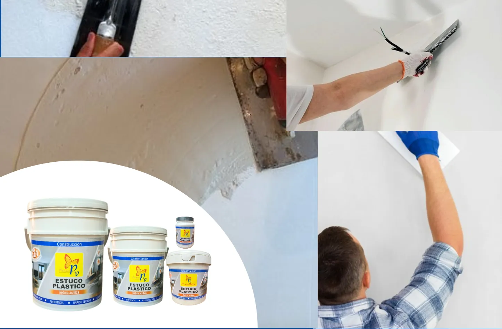
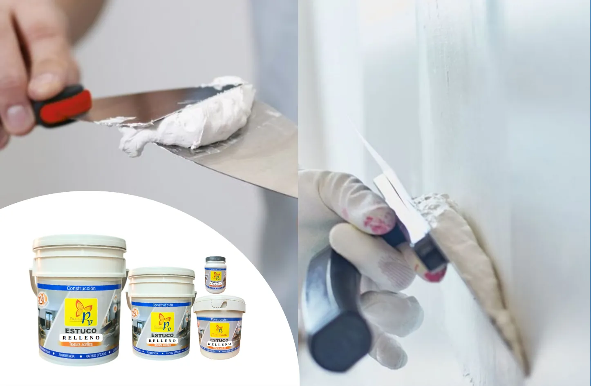
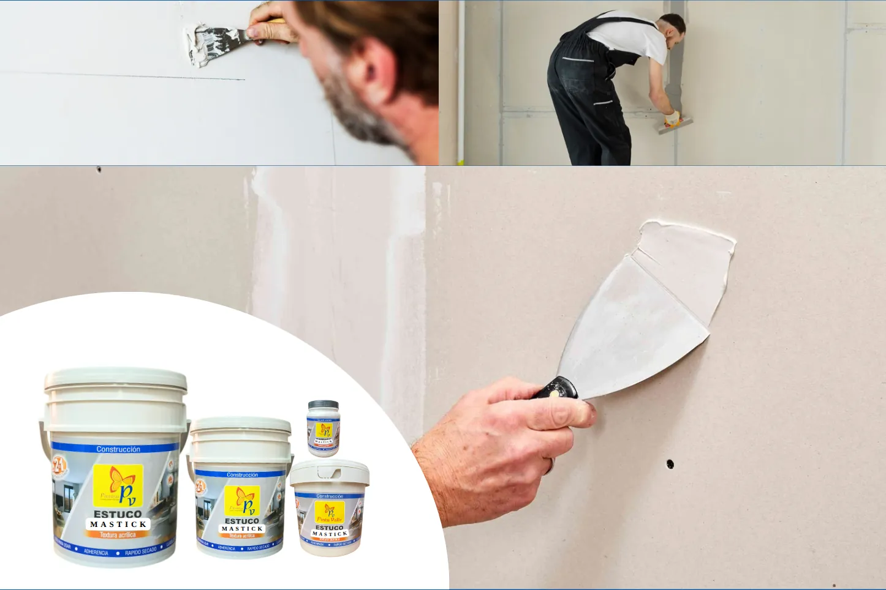

Estuco plástico, estuco relleno y Mastick

Estuco plástico
Es un material de acabado que se utiliza para alisar, nivelar y preparar superficies antes de aplicar pintura.
Se aplica sobre muros de concreto, pañete, bloque, drywall u otras superficies para corregir pequeñas imperfecciones como poros, rayas, marcas o desniveles leves.

Estuco relleno
Es una mezcla de alta consistencia diseñada para corregir imperfecciones profundas en muros y superficies. Se utiliza como capa base para nivelar paredes que presentan grietas, huecos, fisuras o desniveles marcados.

Mastick
Es una masilla de acabado diseñada para nivelar y alisar superficies, especialmente en sistemas de drywall o panel yeso. Se utiliza para cubrir juntas, tornillos, pequeñas fisuras e imperfecciones leves antes de aplicar pintura.
Gracias a su textura suave y fácil aplicación, permite lograr superficies uniformes y listas para acabado final.